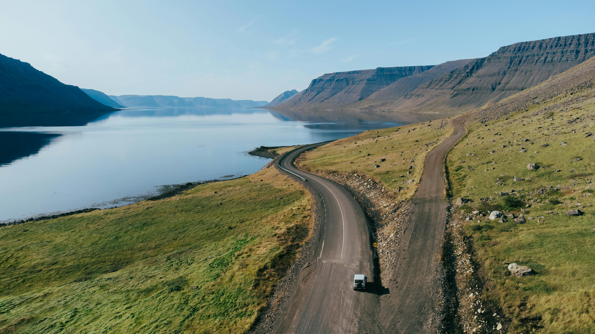
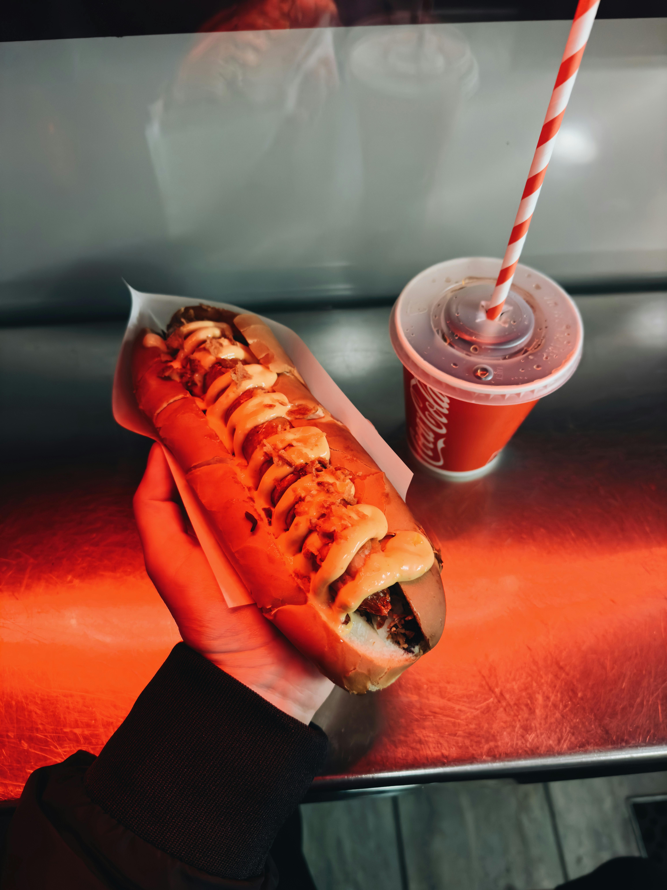
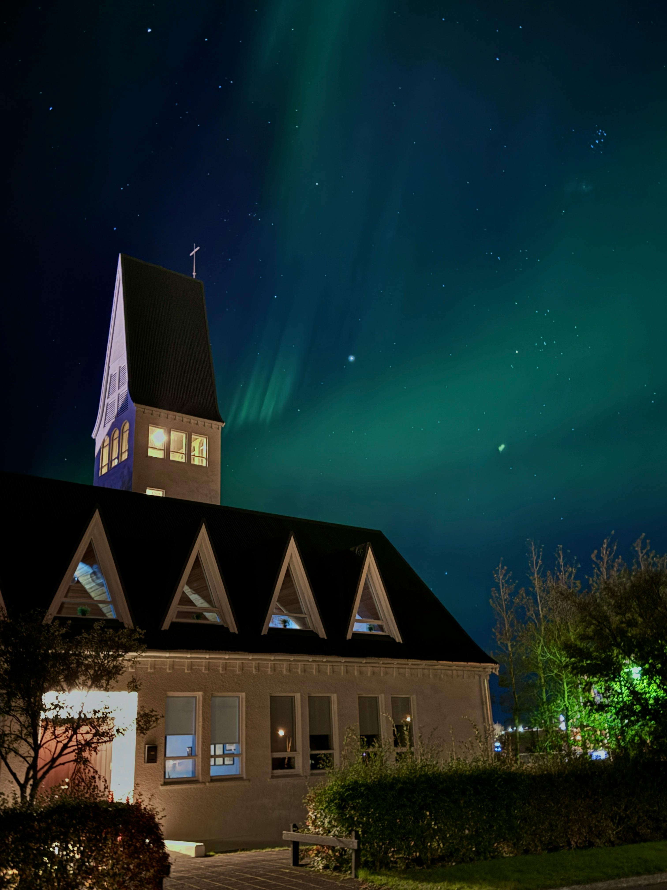
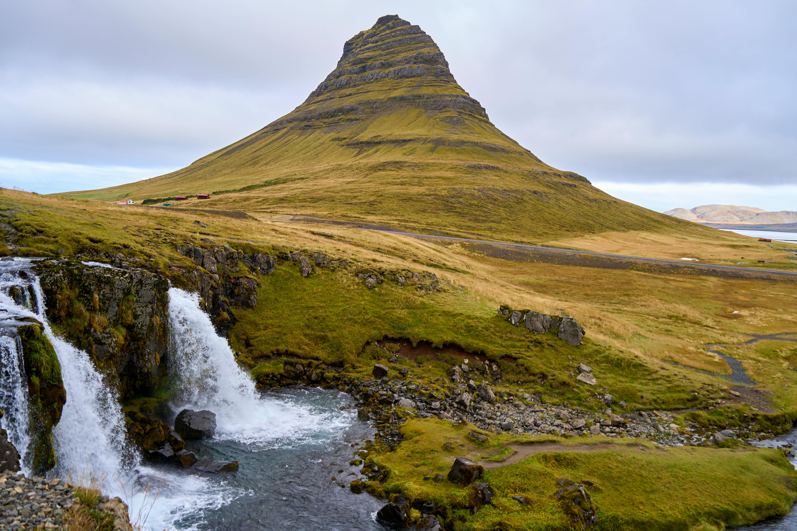
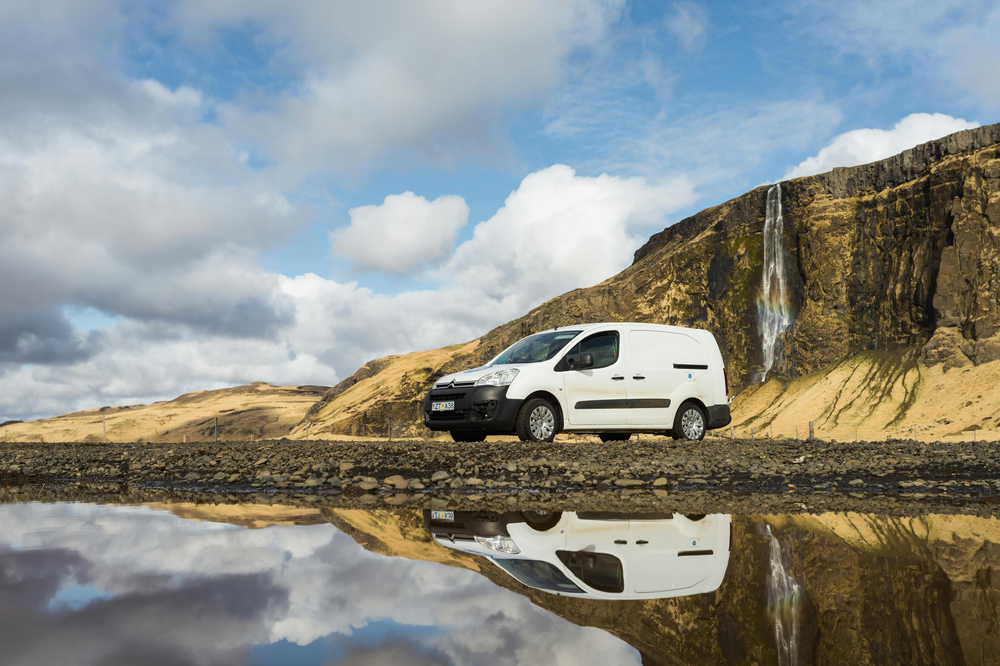
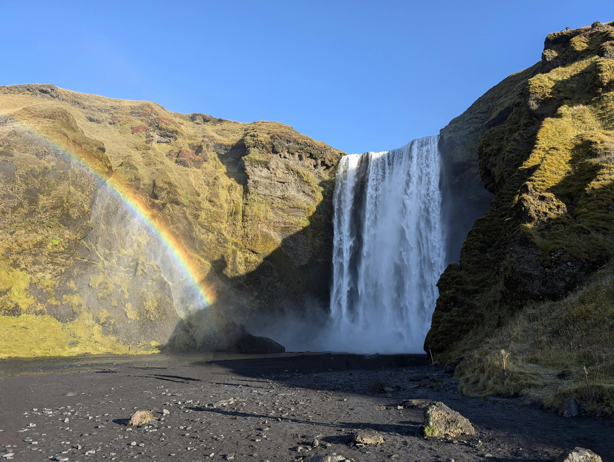
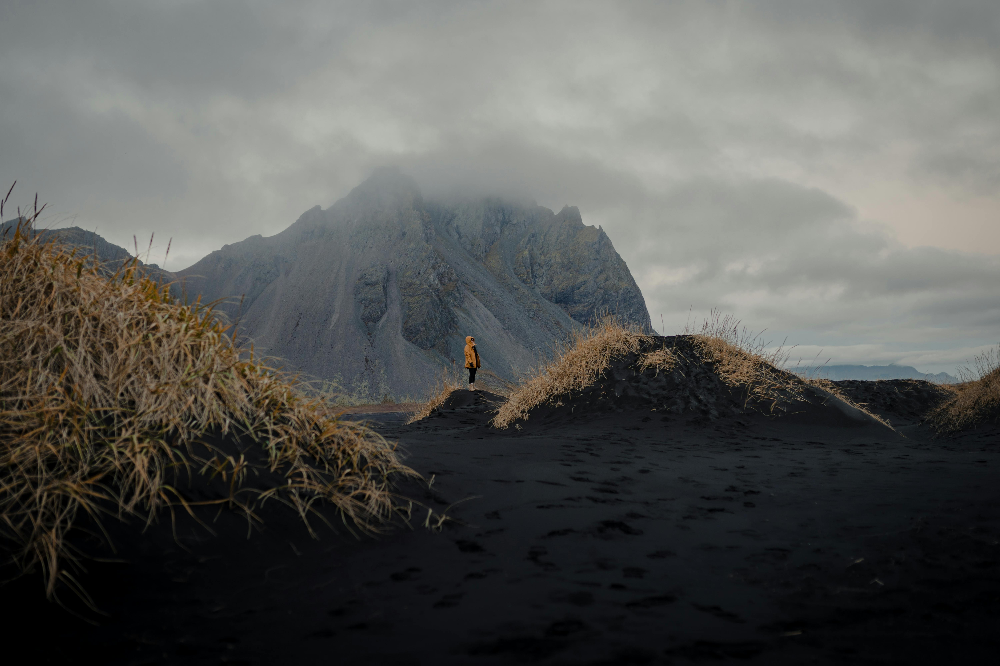

Best Travel Tips

- Best Time to Visit: June to August for the midnight sun and hiking; September to April for the northern lights.
- Transportation: Renting a car is ideal for exploring the Ring Road and remote areas. Buses are available in Reykjavik and some rural regions.
- Language: Icelandic is the official language, but English is widely spoken.
- Currency: Icelandic Króna (ISK); credit cards are accepted almost everywhere.
- Health & Safety: Iceland is one of the safest countries in the world, with high-quality healthcare available.
Best Cuisines and Dining Recommendations

- Plokkfiskur: A traditional fish stew made with white fish, potatoes, and onions.
- Kjötsúpa: Hearty lamb soup, often served during the colder months.
- Pylsur: Icelandic hot dogs, made from a mix of lamb, pork, and beef, often topped with fried onions and mustard.
- Skyr: A traditional Icelandic dairy product, similar to yogurt, but thicker and richer.
- Hákarl: Fermented shark, an acquired taste that is often sampled by adventurous visitors.
Best Accommodation Options

- Luxury Hotels: Reykjavik offers several luxury hotels with modern amenities and stunning views.
- Guesthouses: Stay in cozy guesthouses across the country, perfect for exploring rural areas.
- Farm Stays: Experience authentic Icelandic farm life by staying at family-run farms.
- Hostels: Budget-friendly hostels in Reykjavik and along the Ring Road.
Best Local Culture and Traditions

- Sagas and Legends: Icelandic culture is steeped in the stories of Viking sagas and folklore.
- Elf Beliefs: Many Icelanders believe in elves, and there are designated areas where it’s said they live.
- Winter Festivals: Celebrate events like the Reykjavik Winter Lights Festival and Þorrablót, a traditional midwinter feast.
- Music: Iceland is known for its vibrant music scene, from Björk to contemporary artists like Of Monsters and Men.
- National Day: Celebrate Icelandic National Day on June 17th with parades, concerts, and fireworks.
Best Top Tourist Attractions

- Blue Lagoon: A famous geothermal spa where you can relax in warm, mineral-rich waters.
- Golden Circle: A popular tourist route that includes Þingvellir National Park, Geysir geothermal area, and Gullfoss waterfall.
- Jökulsárlón Glacier Lagoon: See giant icebergs float in a stunning glacial lagoon.
- Reykjavik: Explore the capital city’s unique architecture, such as the Hallgrímskirkja church and the Harpa concert hall.
- Seljalandsfoss: One of Iceland’s most iconic waterfalls, where you can walk behind the cascading water.
Best Transportation Guides

- Car Rentals: The best way to explore Iceland at your own pace, especially the Ring Road and remote regions.
- Domestic Flights: Flights are available between Reykjavik and other towns like Akureyri and Ísafjörður.
- Buses: Reykjavik has a well-connected bus system, and there are long-distance buses to rural areas.
- Ferries: Ferries connect the mainland to islands like the Westman Islands and the island of Grimsey.
Best Outdoor Activities and Adventure

- Hiking: Iceland offers incredible hiking trails, including the Laugavegur Trail and hikes around Landmannalaugar.
- Glacier Hiking: Trek across glaciers like Vatnajökull and Sólheimajökull with guided tours.
- Whale Watching: Take a boat tour from Reykjavik or Húsavík to see humpback whales, orcas, and dolphins.
- Northern Lights: Witness the aurora borealis from September to April, especially in remote areas with little light pollution.
- Ice Caves: Explore breathtaking ice caves, particularly near Vatnajökull Glacier in the winter.
Best Weather and Best Time to Visit

- Winter (Dec-Feb): Cold and snowy, but perfect for seeing the northern lights and enjoying winter sports.
- Spring (Mar-May): The snow begins to melt, making it a great time for visiting waterfalls and starting outdoor activities.
- Summer (Jun-Aug): Warm with long daylight hours (midnight sun), perfect for hiking and exploring.
- Autumn (Sep-Nov): Cooler with the return of the northern lights, great for photography and sightseeing.